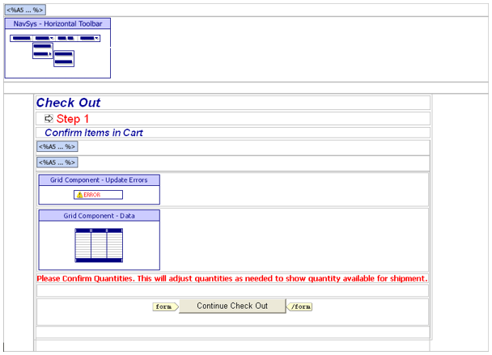
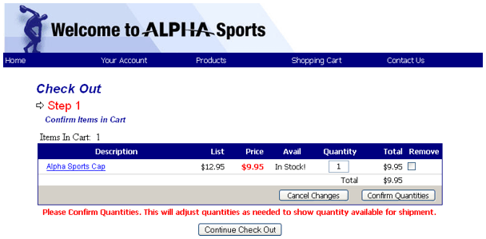

CHECKOUTCART.A5W
Purpose
The CHECKOUTCART.A5W page is the first page in the checkout process. The page verifies the product quantities the shopping cart, then sets a session variable to track the progress of the check out process.
Description
The CHECKOUTCART.A5W page contains the NAV_MAIN navigation and GRD_CARTOUT grid components.
Links
The Shopping Cart > Check out entry of the NAV_MAIN navigation component displays the CHECKOUTCART.A5W page. The CHECKOUTCALC.A5W, CHECKOUTCOMP.A5W, and CHECKOUTUSER.A5W pages will redirect to the CHECKOUTCART.A5W page when errors occur.

CHECKOUTCART.A5W in the WYSIWYG tab of the HTML Editor

CHECKOUTCART.A5W in the Browser
Page Source
The a5w_include("loggedinvalues.a5w") statement runs the code on the LOGGEDINVALUES.A5W page. This page creates and sets the values of session.protectedpUser.userid, session.protectedpUser.type, and session.protectedpUser.name.
|
a5w_include("loggedinvalues.a5w") |
This code sets a session variable to show progress in check out process. The value 0 means that no checkout pages have been completed.
|
session.protectedchkoutprogress = 0 |
The pgstyle variable contains the name of the shopcart style, which is used later on the page.
|
pgstyle = "shopcart" |
The cart_id value is unique for each browser session and identifies the current instance of the open browser. This is different from session.sessionID, which is same for every browser session from the same computer. If the cart_id variable does not exist or its value is NULL, the API_UUIDCREATE() function generates a unique number to identify the cart (or order). The RESPONSE.ADD_COOKIE() saves this value in a cookie.
|
if eval_valid("cart_id") = .F. cart_id = api_uuidcreate() response.add_cookie("cart_id", cart_id, 0) elseif cart_id = "" cart_id = api_uuidcreate() response.add_cookie("cart_id", cart_id, 0) end if |
The next part of the script tests to see if an old shopping cart exists. The script uses the shopcart_chk() function on the SHOPCART_UDF.A5W page. First, the contents of SHOPCART_UDF.A5W are included into the page. Then the code sets the values of the dot variable that it will send to shopcart_chk(). The response from shopcart_chk() is placed into tmpl_cart.
|
a5w_include("shopcart_UDF.a5w") request.variables.cart_id = cart_id dim cartparms as p cartparms.style_name = pgstyle cartparms.DBF.table_name = "PathAlias.ADB_Path\shop_cart.dbf" cartparms.product_table = "PathAlias.ADB_Path\product.dbf" cartparms.product_table_display_fld = "description" cartparms.product_table_id_fld = "prod_id" cartparms.owner_id = loginid cartparms.user_type = logintype cartparms.session = session cartparms.request = request cartparms.response = response cartparms.popup = 0 cartparms.RedirectURL = "index.a5w" cartparms.product_id = "" cartparms.quantity = 1 cartparms.input_value_missing = "" cartparms.emptycart_message = .T. dim tmpl_cart as P tmpl_cart = shopcart_chk(cartparms) if tmpl_cart.RedirectURL <> "" then response.redirect(tmpl_cart.redirectURL) end end if |
The location = "" statement clears any highlighted selection on the menu. The style_name = "shopcart" statement sets the style of the navigation component. The pgstyle = tmpl_NAV_MAIN.style_name statement saves the style of the navigation component in pgstyle.
|
with tmpl_NAV_MAIN location = "" 'set current tab HERE style_name = "shopcart" 'override style HERE componentName = "NAV_MAIN" end with page_style_name = tmpl_NAV_MAIN.style_name |
This part of the script tests to see if any HTML was returned from shopcart_chk(). If there was HTML returned, the script skips the component build and moves to show_page. Instead, it uses tmpl_cart returned by shopcart_chk() to populate the variables normally built by the component. Next, it sets the URL for the page attached to the continue button.
|
if tmpl_cart.html = "" nextpage = "checkoutuser.a5w" session.protectedchkoutprogress = 1 ' items exist, page ok to complete else nextpage = "index.a5w" delete x_GRD_CARTOUT dim x_GRD_CARTOUT as P x_GRD_CARTOUT.Output.Body.Grid_HTML = tmpl_cart.html x_GRD_CARTOUT.Output.Body.UpdateErrors = "" goto show_page ' skip shop cart list component end if |
If the cart does not already exist, this code overrides the DBF.filter and DBF.order properties of the component, to show the contents of the new cart. The style of the grid is set to pgstyle, which was defined earlier.
|
with tmpl_GRD_CARTOUT DBF.filter = "Cart_Id = \"" + cart_id + "\"" DBF.order = "Desc" style_name = pgstyle ' ******** add consistent style componentName = "GRD_CARTOUT" end with |
The remainder of the code displays the page and its components.
|
... show_page: ... HTML page code ... |
Page Security Information
Always Allowed
See Also